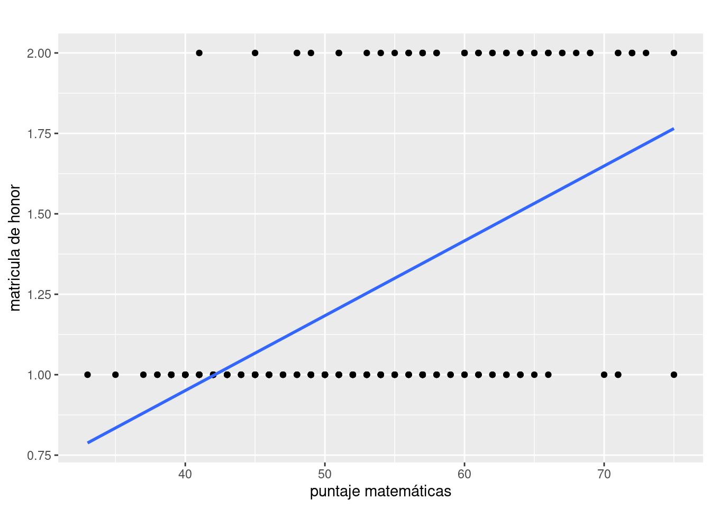
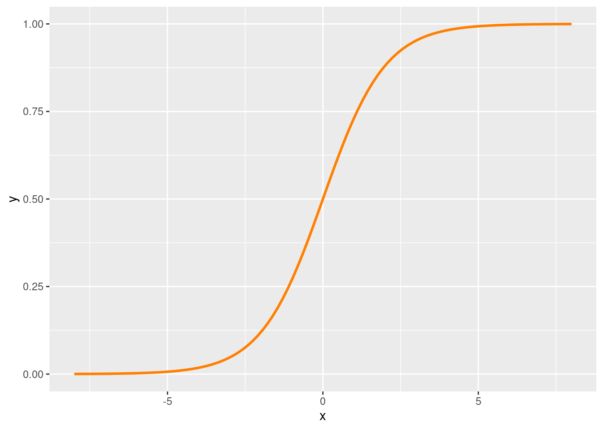
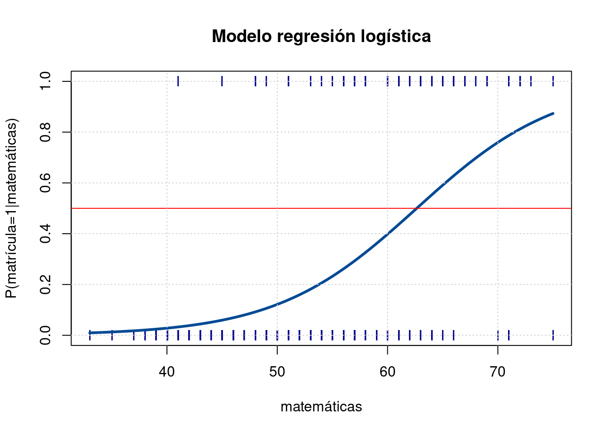
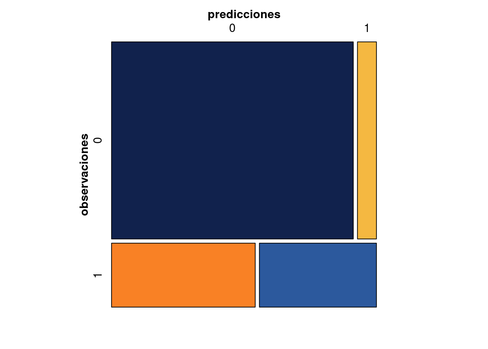

Modelo Lineal General - Logit binomial
Modelos Estadísticos para la toma de decisiones
Introducción
La regresión logística tiene la misma estructura presentada en el modelo de regresión lineal múltiple, solo que la variable dependiente es no numérica y corresponde a una variable cualitativa con dos valores (bivariada). En este caso el modelo se denomina Logit binomial.
Este modelo esta relacionado con predicción y explicación de las decisiones de los consumidores, la clasificación de los clientes de un banco y presenta como función de ajuste la función logit que corresponde a una función en forma de s, en lugar de una linea recta como lo hace la regresión lineal simple.
El objetivo de la regresiòn logística es la de predecir la probabilidad de que una variable binaria (dicotómica) tome los valores posibles en la que esta está definida (\(R_Y= \{0,1 \}\), mediante la combinación lineal de una o varias variables independientes cuantitativas o cualitativas. La regresiòn logistica hace parte de los modelos lineales generalizados en donde se usa una función de enlace llamada logit.
\[Y = \beta_{0} + \beta_{1}X_{1} + \varepsilon\]
Supuestos y requisitos
El supuesto principal está relacionado con la ausencia de multicolinealidad o en caso de existir que sea muy baja, pues de no ser así se puede afectar el resultado de las estimaciones, además de aumentar artificialmente los errores de los estimadores de los coeficientes
Tambien se supone que la variable dependiente es una variable con distribución Bernoulli o binomial con \(n=1\). Teniendo el valor de uno cuando se obtiene éxito y cero cuando la variable representa fracaso.
Ejemplo
El siguiente problema es tomado del documento realizado por Joaquín Amat Rodrigo publicado en RPlus con el fin de presentar el modelo logit simple
Se pretende ilustrar los componentes del modelo lineal general para el caso particular del modelo de logit simple, enmarcado dentro de los modelos llamados modelos de probabilidad y determinar la probabilidad de que un estudiante obtenga matricula de honor a partir de la nota obtenida en matemáticas
Preguntas
Cómo se estiman los modelos de regresión con variables cualitativas como variables respuesta?
Qué problemas se presentan cuando se desean realizar inferencias? Que pruebas de hipotesis se deben realizar?
Como se mide la bondad de ajuste del modelo estimado?
Como se interpretan los resultados obtenidos?
Preguntas planteadas en Gujarati(2009)
Con el prósito de responder a esta preguntas, empezaremos con las caracteristicas de los datos
Datos
La data: matricular de paqueteMOD, contiene
los datos de un conjunto de estudiantes que han obtenido matricula de
honor (matricula = 1) y un grupo de no la han conseguido
(matricula = 0) y sus respectivas notas obtenidas en
matemáticas
En este caso se debe contar con una variable categórica con dos niveles representados por dos valores : \(0\) y \(1\) (variable matricula), quien obra como variable dependiente y por lo menos una variable cuantitativa que tome diferentes valores (en este caso la nota de matemáticas).
library(paqueteMOD)
data("matricular")
summary(matricular) matricula matematicas
0:151 Min. :33.00
1: 49 1st Qu.:45.00
Median :52.00
Mean :52.65
3rd Qu.:59.00
Max. :75.00 Distribución de matriculados:
Utilizamos la función table() para encontrar la
distribución de la variable categórica matricula:
table(matricular$matricula)
0 1
151 49 Distribución del puntaje en matemáticas por tipo de matricula
Tambien podemos explorar el comportamiento de la variable cuantitativa (matemáticas) para las dos categorías, que en este caso corresponde a la distribución de las notas por tipo de matricula :
library(ggplot2)
ggplot(data = matricular, aes(x = as.factor(matricula), y = matematicas, color = matricula)) +
geom_boxplot() +
geom_jitter(width = 0.2)+
scale_color_manual(values=c("#FF7F00","#034A94"))+
labs(x = "matricula de honor", y = "puntaje matemáticas") +
ggtitle(" ")
Modelo logit
Inicialmente podríamos explorar una estimación de MCO, como posibilidad de estimación:
\[ Y = \beta_{0} + \beta_{1}X_{1} + \varepsilon \] Den de la variable \(Y\) es una variable con dos categorías (binaria), la variable \(X\) corresponde a una variable numérica y \(\varepsilon\) corresponde a una variable aleatoria no observable.
Com prueba inicial y de comparación se plantea realizar la estimación por el método de mínimos cuadrados ordinarios.
library(tidyverse)
matricular$matricula=as.numeric(matricular$matricula)
matricular %>%
lm(matricula ~ matematicas , data = .) -> modelo0
summary(modelo0)
Call:
lm(formula = matricula ~ matematicas, data = .)
Residuals:
Min 1Q Median 3Q Max
-0.76516 -0.27653 -0.06712 0.17720 1.02596
Coefficients:
Estimate Std. Error t value Pr(>|t|)
(Intercept) 0.020053 0.150883 0.133 0.894
matematicas 0.023268 0.002822 8.245 2.25e-14 ***
---
Signif. codes: 0 '***' 0.001 '**' 0.01 '*' 0.05 '.' 0.1 ' ' 1
Residual standard error: 0.3729 on 198 degrees of freedom
Multiple R-squared: 0.2556, Adjusted R-squared: 0.2518
F-statistic: 67.99 on 1 and 198 DF, p-value: 2.248e-14El resultado muestra un valor muy bajo de ajuste, dado que los puntos están sobre el eje horizontal con \(Y=0\) o en el eje horizontal con \(Y=1\)
library(ggplot2)
# data(matricular)
matricular1=matricular
matricular1$matricula = as.numeric(matricular1$matricula)
g3=ggplot(data = matricular1, mapping = aes(x=matematicas, y=matricula)) +
geom_point() +
geom_smooth(method = "lm", se=FALSE) +
labs(y = "matricula de honor", x = "puntaje matemáticas") +
ggtitle(" ")
g3
Como se puede observar este modelo no permite ajustar una linea que represente los valores obtenidos en la prueba de matemáticas. Además de no cumplir con los supuestos planteados para el modelo de regresión lineal simple.
- No normalidad de los errores
- Heteroscedasticidad de errores
- Posibilidad de que \(\widehat{Y_{i}}\) se encuentre por fuera del rango \([0,1]\), siendo que estimación de \(Y\) debe corresponder a la probabilidad de ocurrencia de \(Y\)
- Valores muy bajos para \(R^{2}\), dada la dificultad de ajuste de los datos a una linea recta
Estos problemas los podemos superar al plantear el siguiente modelo teniendo como base la función de distribución acumulada \(F(x) = P(X \leq x)\) y la función logística:
\[f(z)= \dfrac{1}{1+\exp{\{-z\}}} = \dfrac{\exp{\{z\}}}{1-\exp{\{z\}}}\]
De esta ecuación podemos definir :
\[P_{i} = P(Y=1 | X =x) = \dfrac{1}{1+\exp{\{-\beta_{0}-\beta_{1}x_{i}\}}} + \varepsilon_{i}^{*}= \dfrac{\exp{\{ \beta_{0}-\beta_{1}x_{i} \}}}{1-\exp{\{\beta_{0}-\beta_{1}x_{i}\}}} + \varepsilon_{i}^{*}\]
y por tanto su complemento está dado por :
\[1- P_{i} = P(Y=0 | X =x) = \dfrac{1}{1 + \exp{\{ \beta_{0}-\beta_{1}x_{i} \}}} \]
La división de estas dos probabilidades genera \(odds\)
\[\Bigg(\dfrac{P(Y=k|X=x)}{1-P(Y=k|X=x)}\Bigg) = \exp{\Big\{\beta_{0}+ \beta_{1} \hspace{.2cm}x_{i} \Big\}} + \varepsilon_{i}^{*}\] Y finalmente al sacar logaritmos en ambos lados se obtiene la siguiente expresión lineal:
\[\ln \Bigg(\dfrac{P(Y=k|X=x)}{1-P(Y=k|X=x)}\Bigg) = \beta_{0}+ \beta_{1} \hspace{.2cm}x_{i} + \varepsilon_{i}^{*}\]
library(ggplot2)
fx=function(x){
1/(1+exp(-x))
}
ggplot(data.frame(x=c(-8, 8)), aes(x)) + stat_function(fun=fx, size=1, col="#FF7F00")
Empleando la función logística se replantea el modelo partiendo del logaritmo de la razón de probabilidades en función de una combinación lineal de las variables independientes :
\[\ln \Bigg(\dfrac{P(Y=k|X=x)}{1-P(Y=k|X=x)}\Bigg) = \beta_{0}+ \beta_{1} \hspace{.2cm}x_{i} + \varepsilon_{i}^{*}\]
Su estimación se puede plantear de manera resumida como:
\[\ln \Bigg(\dfrac{P_{i}}{1-P_{i}} \Bigg) = \ln (odds) =\beta_{0} + \beta_{1} \hspace{.2cm}x_{i} + \varepsilon_{i}^{*}\]
Donde :
- \(odds = \dfrac{P_{i}}{1-P_{i}} = \dfrac{P(Y=k|X=x)}{1-P(Y=k|X=x)}\), llamada tambien razón de probabilida o ratio ODDS
- \(\ln(odds) = \ln \Bigg(\dfrac{P_{i}}{1-P_{i}} \Bigg) = \ln \Bigg(\dfrac{P(Y=k|X=x)}{1-P(Y=k|X=x)}\Bigg)\)
- \(\ln \Bigg(\dfrac{1}{0}\Bigg) \hspace{.5cm}\text{si el estudiante RECIBE matricula de honor}\)
- \(\ln \Bigg(\dfrac{0}{1}\Bigg) \hspace{.5cm}\text{si el estudiante NO RECIBE matricula de honor}\)
El resultado se puede interpretar como:
| Si | \(P_{i} = 1-P_{i}\) | entonces | \(\dfrac{P_{i}}{1-P_{i}} = odds =1\), | por tanto | \(\ln(odds) = 0\) |
| Si | \(P_{i} < 1-P_{i}\) | entonces | \(\dfrac{P_{i}}{1-P_{i}} = odds < 1\), | por tanto | \(\ln(odds) < 0\) |
| Si | \(P_{i} > 1-P_{i}\) | entonces | \(\dfrac{P_{i}}{1-P_{i}} = odds > 1\), | por tanto | \(\ln(odds) > 0\) |
Nota:
\(P_{i}\) : probabilidad de recibir matricula de honor
\(1-P_{i}\) : probabilidad de no recibir matricula de honor
Estimación del modelo
Para realizar la estimación del modelo logit utilizamos la función
glm()
library(tidyverse)
data(matricular)
matricular %>%
glm(matricula ~ matematicas , family = binomial(link = "logit"), data = .) -> modelo1
summary(modelo1)
Call:
glm(formula = matricula ~ matematicas, family = binomial(link = "logit"),
data = .)
Deviance Residuals:
Min 1Q Median 3Q Max
-2.0332 -0.6785 -0.3506 -0.1565 2.6143
Coefficients:
Estimate Std. Error z value Pr(>|z|)
(Intercept) -9.79394 1.48174 -6.610 3.85e-11 ***
matematicas 0.15634 0.02561 6.105 1.03e-09 ***
---
Signif. codes: 0 '***' 0.001 '**' 0.01 '*' 0.05 '.' 0.1 ' ' 1
(Dispersion parameter for binomial family taken to be 1)
Null deviance: 222.71 on 199 degrees of freedom
Residual deviance: 167.07 on 198 degrees of freedom
AIC: 171.07
Number of Fisher Scoring iterations: 5El modelo estimado en su forma original :
\[\ln \Bigg( \dfrac{\widehat{P_{i}}}{1-\widehat{P_{i}}} \Bigg) = \widehat{\beta_{0}} + \widehat{\beta_{1}} \hspace{.2cm}x_{i}\]
Utilizamos la función inversa del logaritmo
\[\Bigg( \dfrac{\widehat{P_{i}}}{1-\widehat{P_{i}}} \Bigg) = \exp{\bigg\{ \widehat{\beta_{0}} + \widehat{\beta_{1}} \hspace{.2cm} x_{i}}\bigg\}\]
\[\Bigg( \dfrac{\widehat{P_{i}}}{1-\widehat{P_{i}}} \Bigg) = \exp{\big\{ -9.793942 + 0.1563404 \hspace{.2cm}x_{i}}\big\}\]
Interpretación de los coeficientes
\(\beta_{0}\)
El coeficiente estimado \(\widehat{\beta}_{0}\) corresponde al valor esperado del logaritmo de la razón de probabilidades para un estudiante con nota cero en matemáticas. Para leerlo en términos de razón de probabilidades realizamos la siguiente transformación:
exp{b0} = exp{-9.793942} = 5.578854e-05Cuando \(x=0\) el valor de la razón de probabilidades es de \(0.0000557885\), indicando que la probabilidad \((1-P_{i})\) es mucho mas grande que \(P_{i}\) . Lo cual es consecuente, dado que obtener un puntaje en el examen de matemáticas \(x=0\), estima una probabilidad de obtener matricula de honor de
\(\beta_{1}\)
Ahora para interpretar el aporte que genera un punto adicional en la nota de matemáticas sobre la probabilidad realizamos el siguiente cálculo:
\[\exp{\{ 0.1563404 \}} = 1.169224\]
exp(0.1563404) = 1.169224\(\widehat{\beta}_{1}\) indica el
cambio en \(ln(p/(1-p))\) debido a un
incremento unitario en \(x\), por lo
que es necesario sacar la función inversa al logaritmo que es la función
exponencial (exp())
Por cada unidad de aumento de \(x\) los \(odds\) de obtener matricula se incrementan en : \(1.17\) unidades
exp(b1)
1.169224 Un intervalo de confianza para los coeficientes se puede obtener mediante :
library(MASS)
confint(object = modelo1, level = 0.95 ) 2.5 % 97.5 %
(Intercept) -12.9375208 -7.0938806
matematicas 0.1093783 0.2103937data(matricular)
matricular$matricula <- as.character(matricular$matricula)
matricular$matematicas <- as.numeric(matricular$matematicas)
plot(matricula ~ matematicas, matricular, col = "darkblue",
main = "Modelo regresión logística",
ylab = "P(matrícula=1|matemáticas)",
xlab = "matemáticas", pch = "I")
# type = "response" devuelve las predicciones en forma de probabilidad en lugar de en log_ODDs
curve(predict(modelo1, data.frame(matematicas = x), type = "response"),
col = "#034A94", lwd = 3, add = TRUE)
abline(h=.50, col="red")
grid()
Bondad de ajuste del modelo
Para determinar la bondad de ajuste del modelo se utiliza el resultado de la probabilidad que estima el modelo y se asigna un valor de cero para los individuos que tengan valores menores o iguales a un punto \(c\), que en este caso tomamos como \(0.50\). Para valores mayores a \(0.5\) se asigna un valor de \(1\)
library(vcd)
predicciones <- ifelse(test = modelo1$fitted.values > 0.5, yes = 1, no = 0)
mc <- table(modelo1$model$matricula, predicciones,
dnn = c("observaciones", "predicciones"))
mc predicciones
observaciones 0 1
0 140 11
1 27 22mosaic(mc, shade = T, colorize = T,
gp = gpar(fill = matrix(c("#11224D", "#F98125", "#F5B841","#2C599D"), 2, 2)))
Los colores azules representan la proporción de clasificaciones correcta :
- Siendo 0, lo clasifica como 0 y
- Siendo 1 lo clasifica como 1
Los colores naranjas corresponden a las proporciones de clasificaciones erradas por el modelo.
La proporción de clasificaciones correctas dan una aproximación del valor \(R^2\)
\[ \dfrac{140+22}{140+27+11+22} = \dfrac{162}{200} = 0.81 \] Este valor cuenta como el \(R^2\) , es decir que el modelo explica (clasifica de manera adecuada) el 81% de los casos
library(DescTools)
PseudoR2(modelo1, which = "McFadden") McFadden
0.2498172 library(pscl)
pR2(modelo1)fitting null model for pseudo-r2 llh llhNull G2 McFadden r2ML r2CU
-83.5366186 -111.3550233 55.6368095 0.2498172 0.2428425 0.3615832 Nota:
Es importante resaltar que en este tipo de modelos la bondad de ajuste pasa a un segundo plano y cobra importancia el signo de los coeficientes y su significancia estadística.
Predicción
Predecir la probabilidad de que un estudiante pueda tener matricula de honor con un puntajes en matemáticas de: 30,40,50,60, 70 puntos
newdata1 <- data.frame(matematicas=c(30,40,50, 55, 60,65,70, 75))
newdata1$rankP <- predict(modelo1, newdata = newdata1, type = "response")
newdata1 matematicas rankP
1 30 0.006037368
2 40 0.028186305
3 50 0.121647088
4 55 0.232326188
5 60 0.398068206
6 65 0.591019371
7 70 0.759489505
8 75 0.873424703Resumen
Modelo estimado
\[ logit(\text{matricula}) = -9.793942 + 0.1563404 \hspace{.3cm} \text{matematica} \]
Probabilidad
\[ P(\text{matricula}) = \dfrac{\exp\{ -9.793942 + 0.1563404 \hspace{.3cm} \text{matematica}\}}{1-\exp\{ -9.793942 + 0.1563404 \hspace{.3cm} \text{matematica}\}} \]
Capacidad de clasificación del modelo
En una de las caracteristicas más importantes del modelo, pues permite valorar a traves de la matriz de confución las clasificaciones correctas por medio de las predicciones del modelo.
Existen adicionamente otros indicadores que pueden ser utilizados como es el estadistico c asociado a la curva ROC (Trvrivrt Oprtsyong Charasteristic) . Esta curva compara diferentes puntos de corte de la probabilidad que permite establecer la tasa de clasificaciones correcta de verdaderos positivos y de falsos positivos:
\[ TPR = \dfrac{\text{número de positivos correctamente pronosticados}}{número de positivos reales totales} \]
\[ FPR = \dfrac{\text{número de falsos positivos}}{\text{número de negativos reales totales}} \]
Es importante examinar la significancia de los coeficientes estimados obtenidos mediante el metodode máxima verosimilitud. En este caso en lugar de calcular el valor p para cada coeficiente, se utiliza el estadistico Z y chi-cuadrado de Wald
Finalmente para convertir el valor estimado de probabilidad en una categoría se debe encontrar el valor de un punto de corte a partir del cual se considera que la variable \(Y\) pertenece a una categoría. En caso de que este valor fuese p=0.5 (\(P(Y=1|X) > 0.50\)), entonce si la estimación del modelo arroja un valor en el rango (0.50 - 1.0), se le asignará el valor de \(1\), en caso contrario tomará el valor de \(0\).